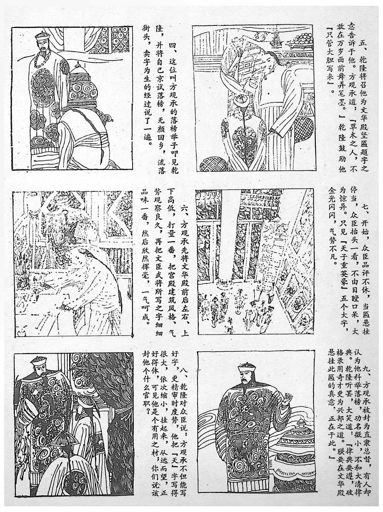

吴国良改编、绘画 《人事》1987年第6期（总第21期），封三
乾隆选才（续）
Qianlong Chooses Talent (continued)
- Panel text
- 四、这位叫方观承的落榜举子叩见乾隆，并将自己京试落榜，无颜回乡，流落街头，卖字为生的经过说了一遍。
4. The man, a failed candidate named Fang Guancheng, kowtowed before Qianlong and told how he had failed the metropolitan examination, been too ashamed to go home, and drifted on the streets, living by selling his calligraphy. - 五、乾隆将召他为文华殿竖匾题字之意告诉于他。方观承道：『草木之人，不敢在万岁面前舞弄笔墨。』乾隆鼓励他『只管大胆写来』。
5. Qianlong told him he had summoned him to write the plaque for the Hall of Literary Glory. Fang said: “A man of no account dares not flourish his brush before Your Majesty.” Qianlong encouraged him: “Just write it boldly.” - 六、方观承先将文华殿前后左右、上下高低，打量一番，把宫殿建筑风格、气势观察良久，再把文臣武将所写之字细细品味一番，然后欣然挥毫，一气呵成。
6. Fang first surveyed the Hall of Literary Glory front and back, left and right, high and low, studying the style and grandeur of the palace for a long time; then he savoured the characters written by the civil and military officials, and finally took up his brush with pleasure and wrote it all in one breath. - 七、开始，众臣品评不休，当匾悬挂停当，众臣抬头一看，不由目瞪口呆，大为惊异。只见『天子重英豪』五个大字，金光闪闪，气势不凡。
7. At first the ministers argued over it endlessly, but when the plaque was hung and they looked up, they were dumbstruck: the five great characters “The Son of Heaven values heroes” gleamed with gold and extraordinary force. - 八、乾隆对众臣说：方观承不但能写好字，更精审时度势，他把『天』字写得很大，依次缩小，挂起来，从远而望，正好得体，可见他是个有用之材；你们说该封他个什么官职？
8. Qianlong said to the ministers: Fang Guancheng not only writes well, he also judges circumstances shrewdly. He wrote the character for “Heaven” very large and the rest progressively smaller, so that hung up and seen from afar it looks exactly right. Clearly he is a man of use — what office do you say we should give him? - 九、方观承被封为直隶总督，有人却认为他科举落榜，功名微小，不和大清律典。乾隆听罢，大笑道：『律典要遵，破格录用奇才更为兴邦之道。朕要在文华殿悬挂此匾的真意，正在于此。』
9. Fang Guancheng was made governor-general of Zhili. Some objected that he had failed the examinations, his rank was humble, and the appointment broke the statutes of the Qing. Qianlong laughed: “The statutes must be obeyed — but breaking the rules to employ exceptional talent is even more the way to make a state prosper. That is the true meaning of the plaque I hung in the Hall of Literary Glory.”
- 四、这位叫方观承的落榜举子叩见乾隆，并将自己京试落榜，无颜回乡，流落街头，卖字为生的经过说了一遍。
- Description
- Picture story, part 2: the copyist is Fang Guancheng, a failed examination candidate selling calligraphy on the street. He studies the hall before writing, sizing each character so the plaque reads true from below; the emperor makes him governor-general, overriding objections that he has no degree.
- Note
- Fang's lack of an examination degree (功名) is the point of the story for 1987 readers: “breaking the rules to employ exceptional talent” (破格录用) was a reform slogan.
- Artist
- Wu Guoliang 吴国良 (adapted and drawn)
- Published in
- 《人事》1987年第6期（总第21期）, inside back cover
- Themes
- Talent and its neglect · Diplomas and credentials · Exemplary history · Picture stories (连环画)

Cite
Wu Guoliang, “乾隆选才（续）” [Qianlong Chooses Talent (continued)], Renshi (Personnel) 《人事》, 1987, no. 6, inside back cover.